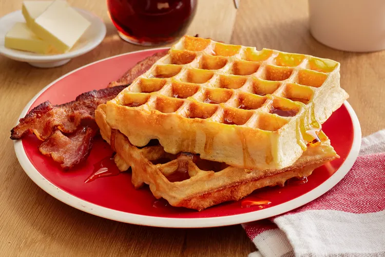

Pair these waffles with classic breakfast fare (think scrambled eggs, bacon, or yogurt). If you're serving them for lunch or dinner, consider serving them with fried chicken! Chicken and waffles is never a bad idea, after all.
Recommend making the batter ahead of time and cooking the waffles just before serving. For make-ahead waffle batter, simply prepare the batter according to the recipe and cover. Refrigerate for up to one week and whisk before using.